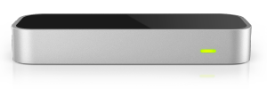

Starting a band with Web Audio and LeapJS
Liza Nguyen
@lnoogn
The Leap Motion Controller

Get LeapJS
<script src="//js.leapmotion.com/leap-0.5.0.js"></script>npm install leapjsbower install leapjsUsing LeapJS
Access frame data
Leap.loop(function(frame) {
frame.hands.forEach(function(hand) {
var x = hand.palmPosition[0];
var y = hand.palmPosition[1];
moveCircle(x, y);
});
});
Using LeapJS
Access gesture data
var controller = new Leap.Controller({ enableGestures: true});
controller.on('gesture', function(gesture) {
/**
* Gesture types include: circle, swipe, keyTap, screenTap
*/
document.getElementById('gesture').className = gesture.type;
});
Web Audio
- The Web Audio API is "a high-level JavaScript API for processing and synthesising audio in web applications". ~W3C specification
Web Audio basics
Audio context
-
Source nodeProcessing nodeDestination node
-
GuitarPedalAmplifier
Web Audio basics
Available on Firefox nightly build
var audioCtx = new audioContext();or in Chrome
var audioCtx = new webkitAudioContext();
Generating sound with an oscillator
var oscillator = audioCtx.createOscillator();
oscillator.type = 'sine';
oscillator.frequency.value = 440;
// Start playing the source immediately
oscillator.start(0);
Set the volume
var gainNode = audioCtx.createGainNode();
var now = audioCtx.currentTime;
// Turn the volume down to 0%
gainNode.gain.setValueAtTime(0, now);Connect the sound
function play() {
var now = audioCtx.currentTime;
oscillator.connect(gainNode);
gainNode.connect(audioCtx.destination);
gainNode.gain.setValueAtTime(1, now);
}
Combining LeapJS and Web Audio
controller.on('gesture', function(gesture) {
switch(type) {
case 'circle':
if(gesture.state === 'stop') { playCoolSound(); }
break;
case 'swipe':
if(gesture.state === 'stop') { playCoolerSound(); }
break;
}
});